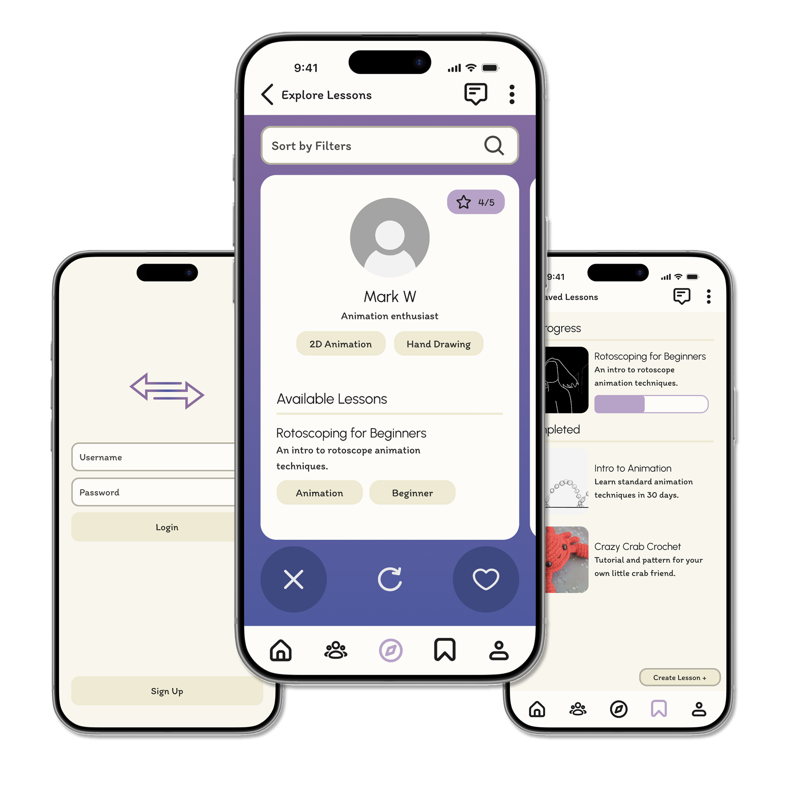

Interaction Design — [PRODUCT / UX DESIGN]
Skill Swap — Judgment free learning environment
Skill Swap is a collaborative learning app prototype designed to connect hobbyists and artists of all skill levels through peer-to-peer learning and skill sharing.
Developed during my first year of graduate study, the project was an early opportunity to experiment with Figma prototyping while exploring how AI tools could support brainstorming, research, and the broader design process.

The Process
How it came togetherPeople have a natural curiosity to learn new skills and hobbies,
but cost, accessibility, and lack of supportive spaces often prevent them from doing so, even though many individuals have valuable skills to share. How might we create a mobile app that encourages peer-to-peer skill exchange in an accessible and judgment-free community?
Initial Plans
Designed to connect artists who prefer learning from peers over formal instruction.
-
Who is it for?
Ages 16+ All skill levels Artists, crafters, and hobbyists
-
What can users do?
Share work on a social feed Discover and join lessons Collaborate in group classrooms
-
How does it work?
Lessons are the core experience, combining tools, tasks, and media uploads. Users can message instructors for support, making it easier to learn and explore new skills.
User Journey and Wireframes
Based on my initial assumptions and pelininary research, I constructed a rought outline for the prototype.
 User journey
User journey
 Wireframes of prototype
Wireframes of prototype
Research Findings
After developing the initial wireframes, I conducted in-depth user research through interviews and usability testing. These insights revealed key user needs, concerns, and pain points, allowing me to refine the experience and address issues before moving into high-fidelity prototyping.
-
Desire To Learn
Excitement generated during interviews proved that people are motivated to learn—seeking to practice, improve, and grow over time.
-
Social Engagement
Learning is more engaging when it’s social—driven by collaboration and shared experiences. Most interview participants expressed interest in shared learning experiences.
-
Teacher Reliability
Users need trusted, verified instructors and strong privacy protections to feel safe. Several study participants shared concerns for privacy and teacher credibility.
-
Navigational Clarity
During the usability tests, users struggled to navigate the prototype. Simple and familiar navigational elementsbecome key here.
The Game
The Game PitchPresenting Wall Ball
For our pitch at the design jam, my team developed a mock-up of how the game may look. The mock-up includes screens for the main player as well as a view for if another kid joins in multiplayer mode. Including two modes allows us to integrate the social engagement without making it a requirement for the user.
Main Player
The main player mode starts once the user puts the AR goggles on their head. It opens with a simple start screen that hovers in front of the user. To begin, the user would only have to aim and press play.
*A code at the bottom would allow the caretaker to invite other children to join the game from a mobile device.*
Once entering the game, a wall in the hospital room will be lit up with color. A ball will materialize in front of the user with arrows indicating that the user should grab it and throw it at the wall. The game continues as the user throws, bounces, and catches the ball.


Multi-Player
Using the code provided by the caretaker, other children in the hospital can tune into the game and play by placing obstacles on the wall. The multiplayer mode shows the wall that the main player also sees. A small box with obstacle options appears in the corner for the multiplayer to choose from. Once used, the box has a cool-down period to prevent players from spamming the wall and making it impossible for the main player.
Outcomes
What I'd carry forwardDesign Jam Results
After pitching our idea to Mixel and Mott, my team earned 2nd place for the design jam. The CEO of Mixel Studio complimented my team on our innovative idea and the depth of our research.
New Experiences
Taking part in these design jams has opened my mind to a variety of mediums of design. Although I have had no prior experience with AR/VR, the research and ideation phases remained familiar.
Future Projects
I hope to continue working with designers, engineers, and clients who challenge me to try new things and get out of my comfort zone.
Curious about another project?
View all work